Balance Shaft: Service and Repair
Balancer shaftsTo remove
1. Remove the Power train. Fit 83 94 751 Engine holder and lift up the cylinder block in 78 74 878 Floor stand.
2. Remove the cover (A) over the ignition coils.

3. Detach the ignition coil connector (B).

4. Remove the bolts (C), lift up each ignition coil and move aside. Start with the ignition coil for cylinder 1.
5. Detach the crankcase ventilation hose (D) from the camshaft cover.
6. Undo the cable duct (E) from the cylinder head and camshaft cover and move it carefully aside.
7. Remove the turbocharger heat shield (F).
8. Detach the ground cable from the camshaft cover (G).
9. Remove the camshaft cover (H).
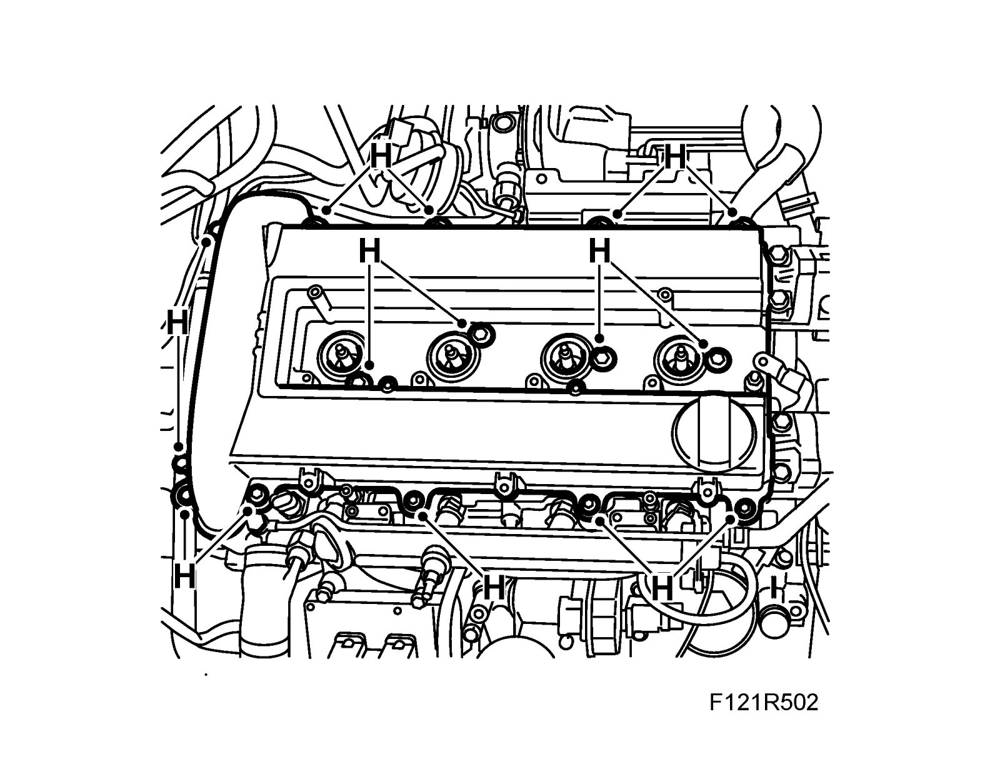
10. Remove the engine mounting bracket (A).
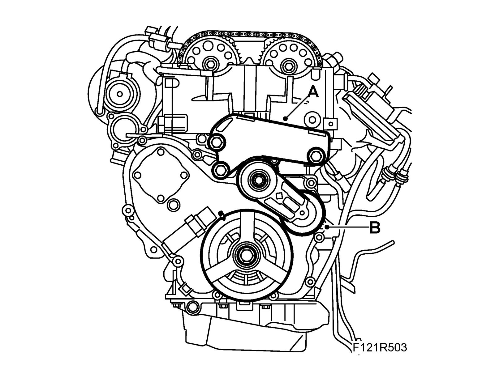
11. Remove the belt tensioner (B).
12. Lower the car and zero the engine by turning the crankshaft in the direction of rotation of the engine until the marking on the crankshaft pulley is aligned with the marking on the timing cover (A). The cam lobes on cylinder 1 intake and exhaust camshafts should be pointing up/in (B).
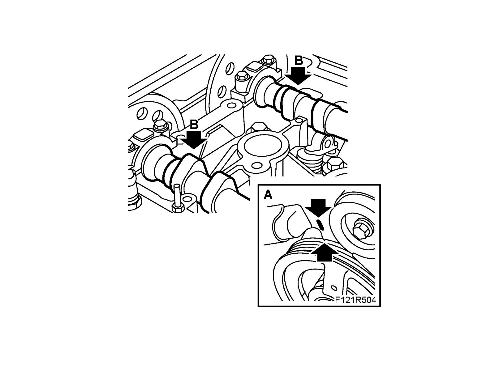
13. Remove the chain tensioner (A). Use 83 96 129 Oil filter tool, B207, and camshaft drive chain tensioner.
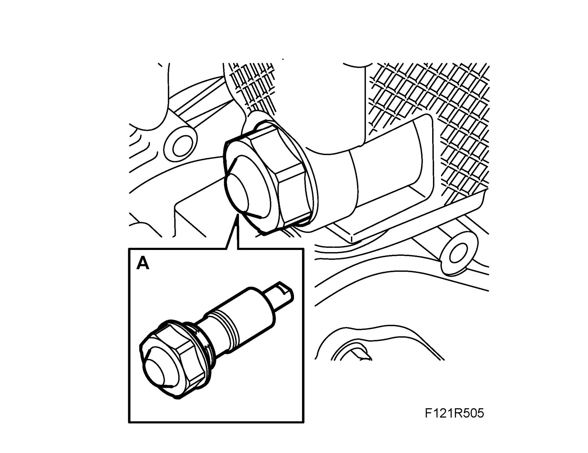
14. Remove the circlip (B) from the chain tensioner and remove the piston.
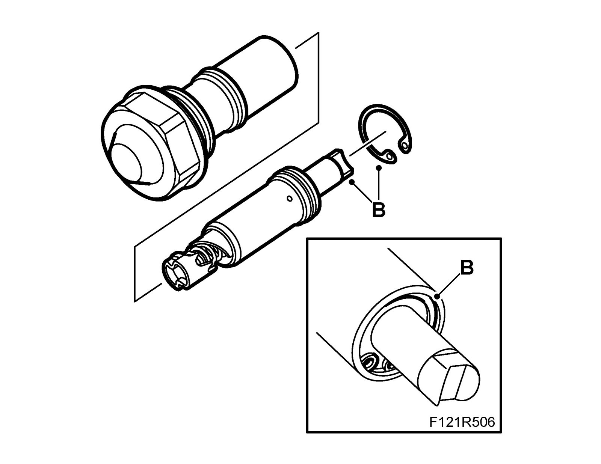
15. Remove the crankshaft pulley using 83 95 360 Holding tool, crankshaft pulley (handle only) and 83 96 210 Holding tool, crankshaft pulley, B207.
16. Carefully remove the timing cover (A).

17. Remove the plug from the cylinder head (B).
18. Remove the crankshaft seal.
19. Remove the upper bolt (A) to the chain guide at the inlet side.
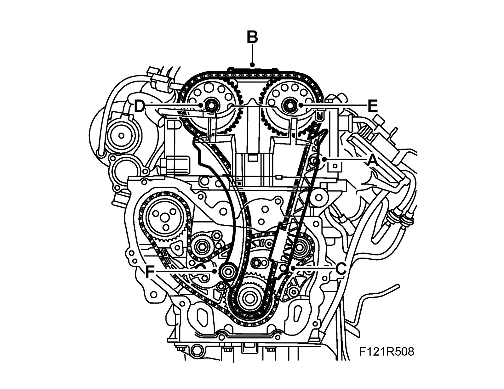
20. Remove the upper timing chain guide rail (B).
21. Remove the lower chain guide bolt (C). Pull the chain guide down. Detach the lower section of the chain.
22. Remove the camshaft sprockets (D) (E). Use a wrench to grip the camshaft flats when the bolts are loosened. Lift up the chain.
23. Remove the tensioner guide (F) by lifting it up. Inspect the condition of the guide. Replace if necessary.
24. Remove the balancer shaft chain.
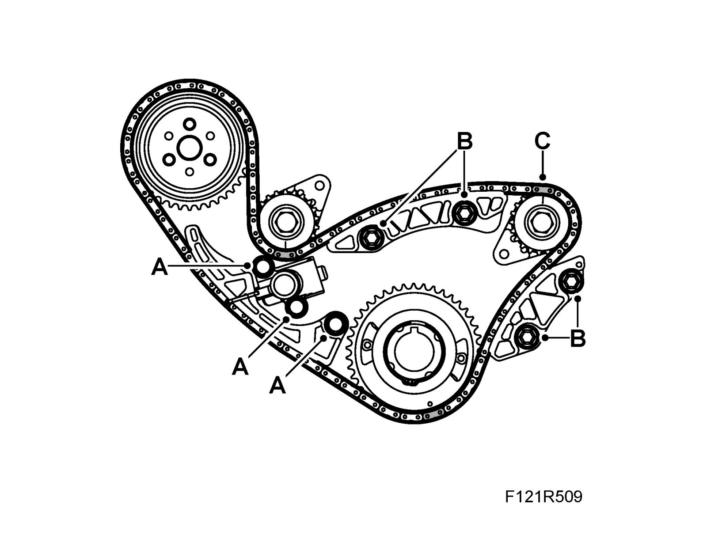
^ Remove the chain tensioner (A).
^ Remove the chain's guide rails (B).
^ Remove the chain (C).
25. Remove the bolts (A) of the balancer shafts.
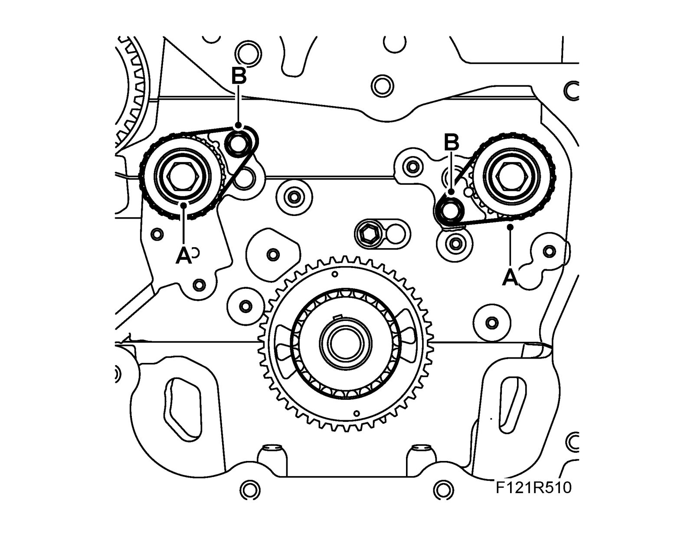
26. Carefully remove the balancer shaft (B) from the engine block.
To fit
1. Oil the balancer shaft contact surfaces and fit the balancer shaft (B).
Important
Note the markings on the balancer shafts.
2. Fit the bolts (A) of the balancer shaft.
Important
The colour markings on the balancer shaft chain must correspond with the markings on the gears.
3. Fit the balancer shaft chain.

^ Fit the chain (C). Start fitting the water pump pinion.
^ The silver-colored link must be fitted to the exhaust side balancer shaft sprocket (1A).
^ The copper-colored link must be fitted to the intake side balancer shaft sprocket (1B).
^ The silver-colored link must be fitted to crankshaft sprocket (C).
^ Fit the chain's guide rails (B). Use Thread locking adhesive, Loctite 242.
Tightening torque 10 Nm (7 lbf ft)
4. Load the tensioner by pressing in the piston and turning to the right (A). Then lock with 83 96 392 Lock pin.
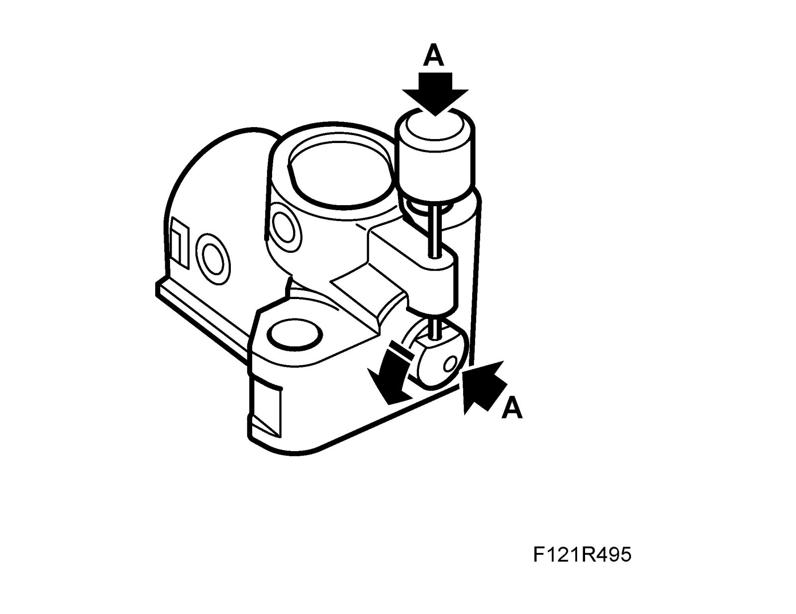
5. Fit the chain tensioner (A). Use Thread locking adhesive, Loctite 242.
Tightening torque 10 Nm (7 lbf ft)

6. Remove the tool from the tensioner. Press the tensioner guide rail to check that backward movement of the plunger is prevented.
7. Clean all sealing surfaces.
8. Clean the camshaft and pinion contact surfaces (A) from oil and grease.
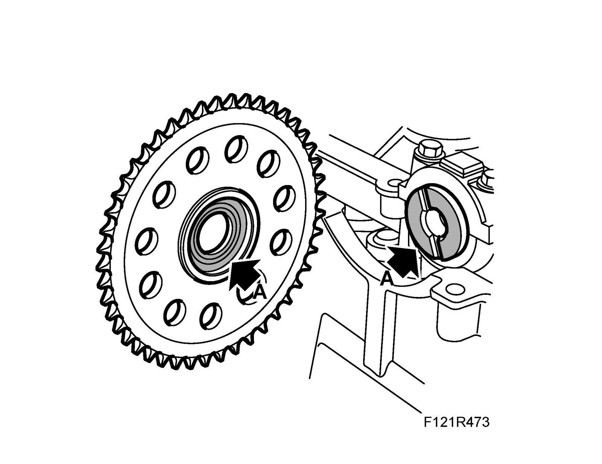
9. Fit the tensioner guide (F).
Tightening torque 10 Nm (7 lbf ft)

10. Lay the chain on the intake sprocket and lower the chain. Fit the sprocket on the camshaft and tighten the bolt (E).
11. Fit the chain on the crankshaft sprocket and fit the chain guide. Fit the lower bolt (C).
Tightening torque 10 Nm (7 lbf ft)
12. Fit the exhaust sprocket and tighten the bolt (D).
13. Fit the upper timing chain guide rail (B).
14. Fit the upper bolt (A).
Tightening torque 10 Nm (7 lbf ft)
15. Turn the camshaft drive tensioner clockwise with a screwdriver (A) until it engages in the tensioned position.

16. Place the plunger in the chain tensioner sleeve. Fit the circlip (B) and check that it is fitted correctly in the groove.
Note
Check that the O-ring and gasket are intact. If damaged, replace the chain tensioner assembly.

17. Fit the chain tensioner (A).
Tightening torque 75 Nm (55 lbf ft)

18. Release/activate the chain tensioner by carefully pressing on the timing chain or chain guide (as shown in the illustration). Use a screwdriver (A). Check that the tensioner has released.

19. Remove the exhaust camshaft and intake camshaft bearing caps no. 2 and no. 7. Position EN-48368 Adjustment tool, camshaft (B207R) and EN-48366 Adjustment tool, camshaft (B207E, B207L) (B) by manually pressing the tools down onto the camshafts without tightening the bolts. Turn the camshaft until the tool aligns with the spanner on the camshaft flats. Tighten the adjustment tools' bolts.
Tightening torque 10 Nm (7 lbf ft)
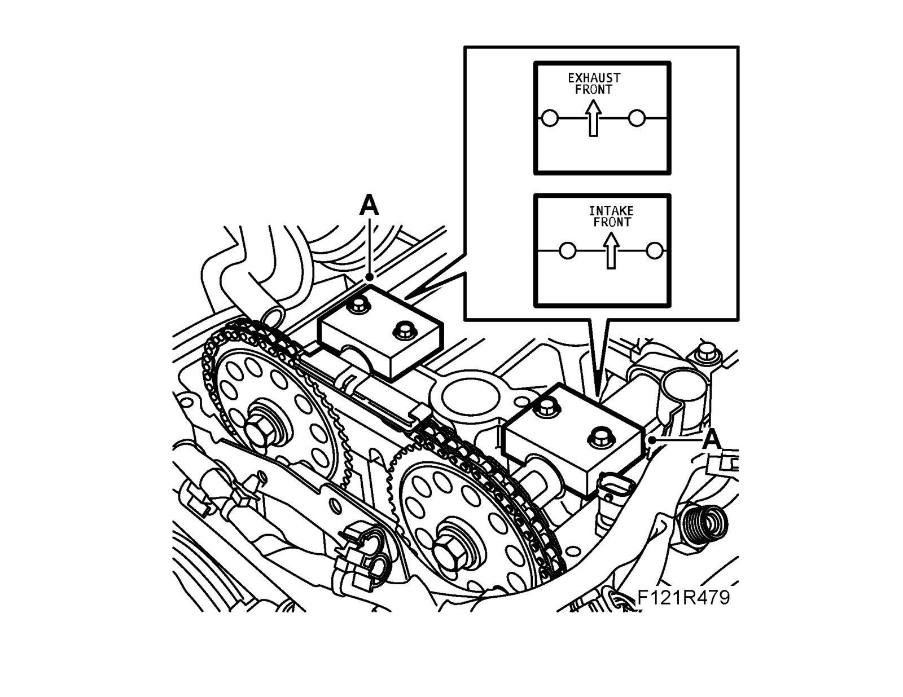
20. Fit the timing cover (A) with a new gasket.
Tightening torque 20 Nm (15 lbf ft)
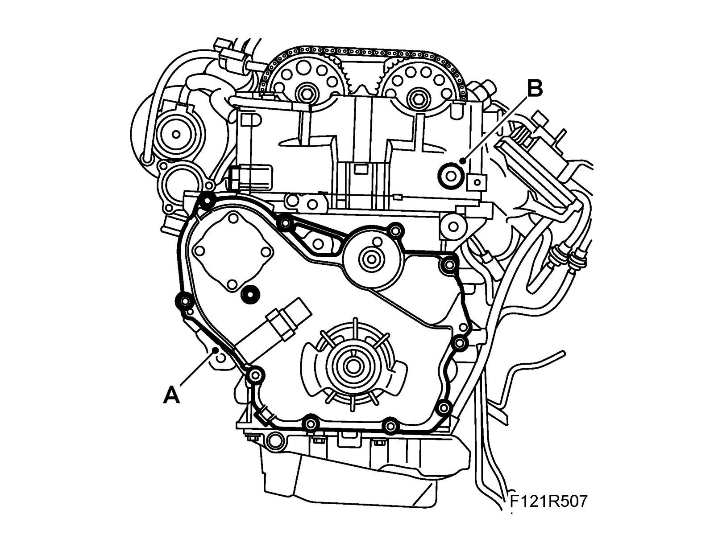
21. Fit the plug (B).
22. Position the 83 96 202 Fitting tools, front crankshaft seal B207 protective collar (A) on the crankshaft. Lubricate the new sealing ring with non-acidic Vaseline and position it on the fitting tool.
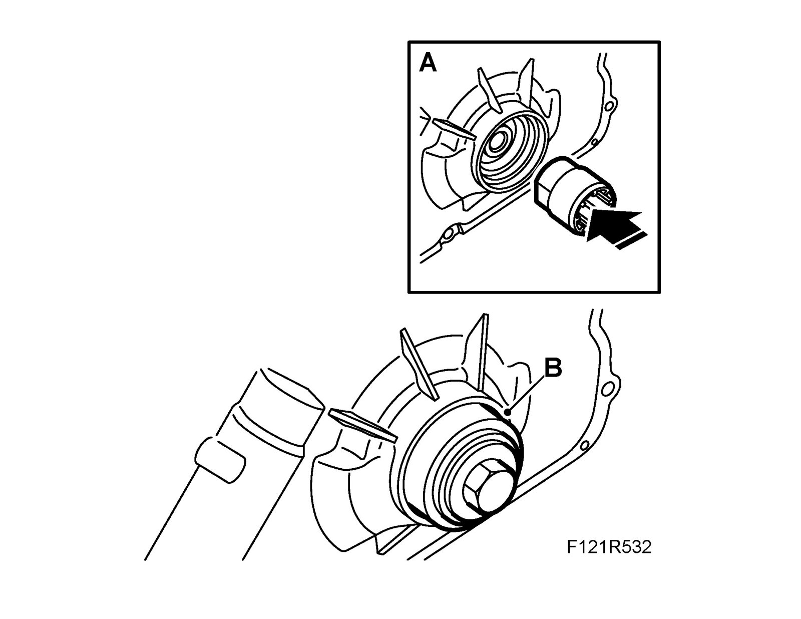
23. Position the fitting tool on the crankshaft. Tighten the sealing ring using the crankshaft pulley bolt until it is flush with the timing cover (B). Remove the tool.
24. Fit the crankshaft pulley with a new bolt. Use 83 95 360 Holding tool, crankshaft pulley (shaft only) and 83 96 210 Holding tool, crankshaft pulley, B207.
Tightening torque 100 Nm + 75° (74 lbf ft + 75°)
25. Check that the markings on the crankshaft pulley and the timing cover are aligned. Tighten the camshaft gears a first time (A). Use a wrench to grip the camshaft flats.
Tightening torque 30 Nm (22 lbf ft)

26. Remove the adjustment tools and fit the bearing caps (B).
Tightening torque 8 Nm (6 lbf ft)
27. Continue to tighten the camshaft gears to the final torque (C). Use a wrench to grip the camshaft flats.
Tightening torque 85 Nm + 30° (63 lbf ft +30°)
28. Turn the crankshaft 2 rotations in the direction of engine rotation until the markings on the crankshaft pulley and the timing cover are aligned. Remove the bearing caps and refit EN-48368 Camshaft setting tool (B207R)or EN-48366 Camshaft setting tool (B207E, B207L) to check that the camshaft setting is correct. Remove the setting tools and fit the bearing caps.
Tightening torque 8 Nm (6 lbf ft)
29. Fit the belt tensioner (B).

30. Fit the engine mounting bracket (A).
31. Fit the camshaft cover (H) with a new seal.
Tightening torque 10 Nm (7 lbf ft)

32. Connect the ground cable to the camshaft cover (G).
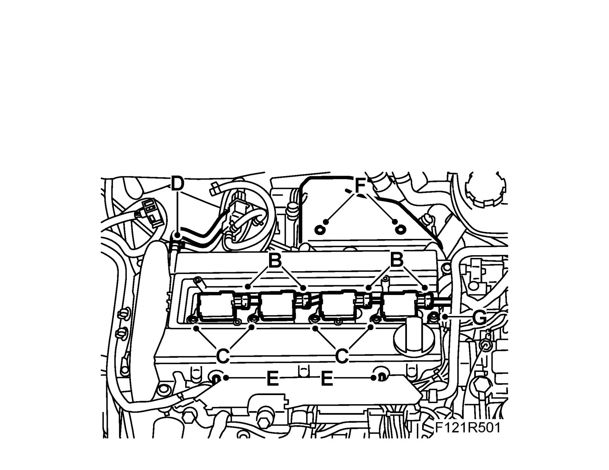
33. Fit the turbocharger heat shield (F).
34. Fit the cable duct (E) and bracket to the camshaft cover.
35. Connect the crankcase ventilation hose (D) to the camshaft cover.
36. Fit the ignition coils (C).
Tightening torque 8 Nm (6 lbf ft)
37. Connect the ignition coil connector (B). Make sure that the cable does not get pinched by the cover.
38. Fit the cover (A) over the ignition coils.
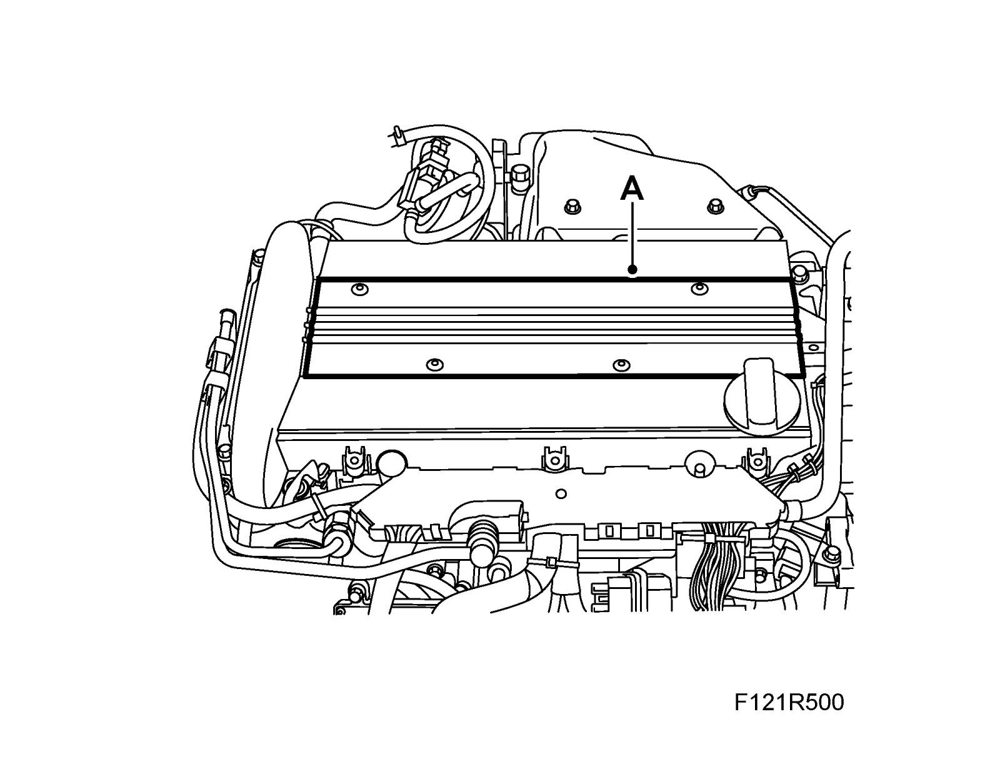
39. Fit Power train.